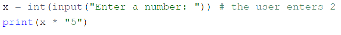
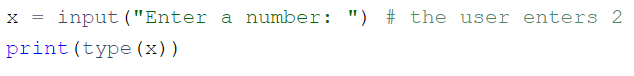

a = 3.0
b = 4.0
c = (a ** 2 + b ** 2) ** 0.5
print("c =", c)c = 5.0author: “© Oleksandr Maltsev , date:”19.09.2024”
Мета: освоїти роботу зі змінними та операції вводу і виводу
Перед виконанням лабораторної роботи необхідно опрацювати матеріал Лекції 3.
У лабораторній роботі використано матеріали python institute.
input().int(), float(), string().Написати програму, яка вводить довжини катетів \(a\) та \(b\) прямокутного трикутника та обчислює його гіпотенузу \(c\).
a = 3.0
b = 4.0
c = (a ** 2 + b ** 2) ** 0.5
print("c =", c)c = 5.0Написати програму, яка обчислює значення функції Гауса: \[f(x) = \frac{1}{\sigma \sqrt{2 \pi}} e^{-\frac{(x-\mu)^2}{2\sigma^2}}\]
import math
def gaus(a1, b1, d1):
R1 = 1 / (d1 * math.sqrt(2 * math.pi))
R2 = math.exp(-((a1 - b1) ** 2) / (2 * d1 ** 2))
return R1 * R2
a = 0
b = 0
d = 1
result = gaus(a, b, d)
print(result)Ось невелика розповідь:
Якось Джон (John) мав три яблука, Мері (Mary) мала п’ять яблук, а Адам (Adam) мав шість яблук. Усі вони були дуже щасливі та жили довго. Кінець історії.
Ваше завдання:
створіть змінні: john, mary, і adam;
надайте значення змінним. Значення повинні дорівнювати кількості фруктів, якими володіють Джон, Мері, і Адам відповідно;
зберігши числа в змінних, виведіть змінні в один рядок і розділіть їх комами;
тепер створіть нову змінну з ім’ям totalApple, що дорівнює сумі трьох попередніх змінних;
вивести значення, збережене в totalapples, в консоль;
надрукувати рядок та ціле число разом в одному рядку, наприклад, “Загальна кількість яблук:” та total_apples|.
John = 40
Mari = 120
Adam = 5000
print(John, Mari, Adam)
Result = John + Mari + Adam
print(Result)
print("Зг яблук:", Result)40 120 5000
5160
Зг яблук: 5160Милі та кілометри – це одиниці довжини або відстані.
Враховуючи, що 1 миля дорівнює приблизно 1.61 кілометрам, напишіть програму, щоб вона перетворила:
милі у кілометри;
кілометри на милі.
Не змінюйте нічого в існуючому коді. Напишіть свій код у місцях, вказаних ###. Протестуйте вашу програму з даними, які надано у вихідному коді.
Зверніть особливу увагу на те, що відбувається всередині функції print(). Проаналізуйте, як ми надаємо кілька аргументів функції та як ми виводимо очікувані дані.
Зауважте, що деякі аргументи всередині функції print() є рядками (наприклад, "miles is", тоді як деякі інші є змінними (наприклад, miles).
kilometers = 12.25
miles = 7.38
mk = 1.61
print(miles, "милі", miles * mk, "километри.")
print(kilometers, "километр ", kilometers / mk, "милі.")7.38 милі 11.8818 километри.
12.25 километр 7.608695652173912 милі.Очикуваний вивод:
7.38 miles is 11.88 kilometers
12.25 kilometers is 7.61 miles
Подивіться код у редакторі: він читає “плаваюче” значення, поміщає його у змінну з ім’ям x, і друкує значення змінної з ім’ям y. Ваше завдання - завершити код, щоб оцінити такий вираз:
\[3x^3 - 2x^2 + 3^x - 1\]
Результат має бути присвоєний y.
x = float(input("Введіть значення x: "))
y = 3 * (x**3) - 2 * (x**2) + 3 * x - 1
print("Результат:", y)Введіть значення x: 0Результат: -1.0Тестові данні
Приклад вводу
x = 0
x = 1
x = -1
Приклад виводу
y = -1.0
y = 3.0
y = -9.0
Код редактора містить коментарі. Спробуйте покращити його: додайте або видаліть коментарі там, де ви вважаєте це доречним (так, іноді видалення коментаря може зробити код більш читабельним) і змініть імена змінних там, де, на вашу думку, це покращить розуміння коду.
hours = 2 # number of hours
seconds_1_hour = 3600 # number of seconds in 1 hour
print("Hours: ", hours) #printing the number of hours
print("Seconds in Hours: ", hours * seconds_1_hour) # printing the number of seconds in a given number of hoursHours: 2
Seconds in Hours: 7200Ваше завдання – завершити код, щоб отримати результати чотирьох основних арифметичних операцій.
Результати мають бути виведені у консолі.
Можливо, ви не зможете захистити код від користувача, який хоче ділити на нуль. Пізніше ми взнаємо, як це зробити.
a = float(input("Enter a value for a: "))
b = float(input("Enter a value for b: "))
print("Addition:", a + b)
print("Subtraction:", a - b)
print("Multiplication:", a * b)
if b != 0:
print("Division:", a / b)
else:
print("Division: Cannot divide by zero")
print("\nThat's all, folks!")Enter a value for a: 0
Enter a value for b: 12Addition: 12.0
Subtraction: -12.0
Multiplication: 0.0
Division: 0.0
That's all, folks!Ваше завдання – завершити код, щоб оцінити такий вираз: \[\frac{1}{x + \frac{1}{x + \frac{1}{x + \frac{1}{x + \frac{1}{x}}}}}\]
Результат має бути присвоєний y.
Ви можете використовувати додаткові змінні для зменшення виразу (але це не обов’язково). Ретельно тестуйте свій код.
x = float(input("Enter value for x: "))
y = 1 / (x + 1 / (x + 1 + 1 / (x + 1 + 1 / x)))
print("y =", y)Enter value for x: 10y = 0.09910635214555995Тестові дані
x = 1
y = 0.6000000000000001
x = 10
y = 0.09901951266867294
x = 100
y = 0.009999000199950014
x = -5
y = -0.19258202567760344
Ваше завдання - підготувати простий код, здатний порахувати час закінчення періоду часу, вираженого в кількості хвилин (воно може бути як завгодно великим). Час початку вказується у вигляді пари годин (0..23) та хвилин (0..59). Результат повинен бути надрукований на консолі.
Наприклад, якщо подія починається о 12:17 і триває 59 хвилин, вона закінчується о 13:16.
Не турбуйтеся про будь-які недоліки у вашому коді –- це нормально, якщо він приймає неприпустимий час -– найважливіше, що код видає дійсні результати для правильних вхідних даних.
Ретельно перевірте код. Підказка: використання оператора % може бути ключем до успіху.
hour = int(input("Enter the start hour (0..23): "))
mins = int(input("Enter the start minutes (0..59): "))
dura = int(input("Enter the number of minutes to add: "))
tm = mins + dura
nminutes = tm % 60
nhours = (hour + tm // 60) % 24
print(f"The event will end at {nhours:02}:{nminutes:02}")Enter the start hour (0..23): 12
Enter the start minutes (0..59): 17
Enter the number of minutes to add: 59The event will end at 13:16Тестові дані
Приклад вводу:
12
17
59
Очікуваний результат: 13:16
Приклад вводу:
23
58
642
Очікуваний результат: 10:40
Приклад вводу:
0
1
2939
Очікуваний результат: 1:0
Виконати завдання 1-8, наведені вище у цьому зошиті.
Створити файл lab_3_StudentLastName.py з написаним кодом.
Закомітити файл у локальний репозиторій.
Відправити поточну версію Git-проєкта у віддалений репозиторій на GitHub.
Звіт має складатися з файлу (за основу взяти цей Python-зошит) lab_3_StudentLastName.ipynb. (Можливі якісь додакові файли)
Який вивод наступного фрагмента? 
Який очікуваний результат наступного фрагмента? 
## Контрольні запитання
##1
x = int(input("Enter a number: "))
print(x * 5)
##2
y = int(input("Enter a number: "))
print(type(y))Enter a number: 210Enter a number: 2<class 'int'>